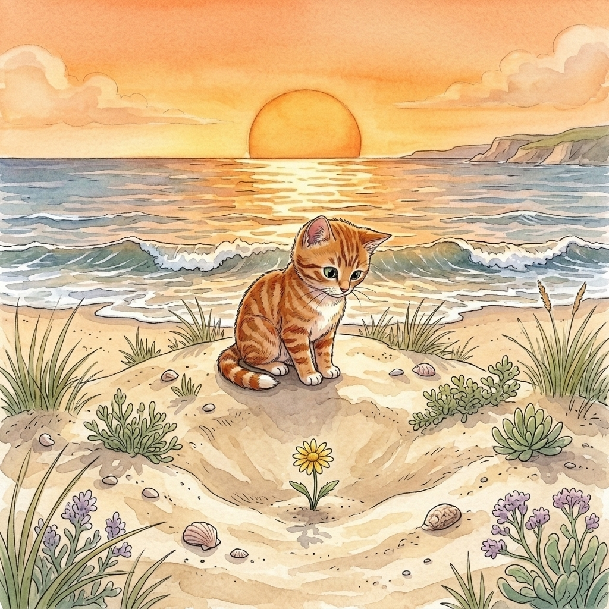

Step 1 · Say the Sound
ow
ow can say long o, like grow.
grow
low
slow
Read one gentle story with ow. In this story, ow says long o, like in grow.

ow can say long o, like grow.
A little flower is low.
It is yellow.
Beach Cat sits slow.
“Grow, little flower,” he says.
The sun is low.
The flower can grow.
Now you read words with ow.
That’s a win.
If it still feels fun, read the story again.